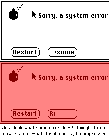

| Pros: Fast, Fast, Fast. Allows you to shade pictures to any color. Preserves
Picture transparency. Cons: Only supports 50% shading. Limited and inconvenient documentation. Always returns 32-bit pictures.
|
PictureShader 1.2
| Author: Søren Olin Price: <free> Download: cafe.realbasic.com (Hotline), Søren's Site |
As anyone who's tried to edit pictures in RB knows, it can be slow and frustrating. Going through each and every pixel in an image with two for loops makes getting the desired effect easy, but getting that effect in less than a minute is rare. The RGBsurface helped that out, but only to a certain extent.
 One such effect is shading a picture. To do this, you could go through each pixel, and subtract a certain percentage from it. However, as you'd soon find out, its speed leaves something to be desired. However, Søren Olin's PictureShader changes all that.
At its heart, PictureShader is quite simple. Give a Picture and a color to the Shade method, and you'll get a nicely shaded image back. It's simple enough, but the most important thing is that PictureShader shades the image quickly.
PictureShader makes use of QuickDraw's built-in dithering abilities. Instead of changing each individual pixel in the picture, PictureShader makes a new picture that's twice as large as the original. It then draws a horizontal line of the given color through every other pixel. After this, the image can be reduced again to give a shaded image. With this method, only 10 drawing commands are used on a 100x20 image, as opposed to the 2,000 you'd use with the for loops.
PictureShader does more than this though. It also allows you to shade only specific parts of an image. Two other functions in the PictureShader module allow you to shade areas based on a mask color, and a mask picture. This greatly enhances its usefulness.
However, in my tests, shading an image with another picture as a mask made PictureShader throw up nilObjectExceptions all the time. When shading an image with transparency however, PictureShader worked perfectly, and preserved the mask color.
PictureShader is a useful class for anyone who needs to do graphics shading. However, the inability to shade pictures to a value other than 50% is a major setback, but not enough to keep PictureShader from being a vary worthwhile product.
| Pros: Fast, Fast, Fast. Allows you to shade pictures to any color. Preserves
Picture transparency. Cons: Only supports 50% shading. Limited and inconvenient documentation. Always returns 32-bit pictures.
|